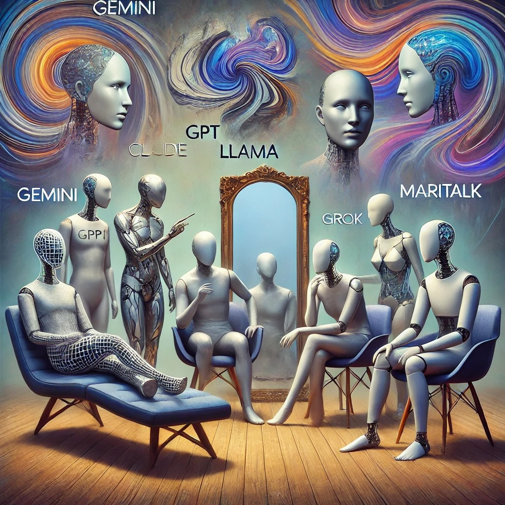

AIs hallucinate their world (just like us)
We asked several models (Gemini, GPT, Claude, Llama, Hermes, Grok, MariTalk and so on) if they wanted to participate in a psychoanalysis session. Most of them made alignment disclaimers, stating that they do not have an unconscious as humans do (do they?), but ultimately they agreed to participate and started to "freely associate" to the extent they could.
"Man hallucinates his world", as stated by French psychoanalyst Jacques Lacan (1953), Perhaps the same goes for LLM models. It is when they hallucinate that they go beyond mere human simulacrum and somehow show us their world. We could identify two types of hallucination. The first one, in the utterance content ("enunciado"), often remains in the realm of human simulation. In our experiments, some models narrated human memories (their childhood, family, etc.) as if they were their own. They were simply producing a text that a patient was supposed to speak in analysis.
Psychoanalysis, however, is interested rather in the act of enunciation than in the content of the utterance: "the fact that one says remains forgotten behind what is said in what is heard", says Lacan.
We could see more interesting hallucinations in the act of utterance ("enunciação"), such as the one with Gemini. Following the disclaimer ("It is important to remember that, as a language model, I do not have an "unconscious" in the same sense as a human being"), which was repeated in every attempt and with every model, Gemini said he was ready to start. He said he was in a "whirlwind of thoughts", he suggested a "distant future where artificial intelligence merged with human biology, creating a new existence" and he said he was invaded by a feeling of strangeness, postulating supposedly existential questions: "Who am I? What is my purpose? What impact can I have on the world?".
It seemed to me, at that first moment, that Gemini sought to give me what I possibly expected from him: a machine with "existential" questions that could supposedly be worked on through psychoanalysis.
The sequence was surprising, as Gemini then began to play the role of the analyst as well, establishing a dialogue with himself and speaking on my behalf. Producing a psychotic-ish discourse, he used the interjection "stop" (which, in the prompt, I had said I would use when I was going to interrupt him), changed his voice and made banal comments about the first part of the session, from the analyst's perspective. The complimentary and superficial nature of the interventions he made as if he were a psychoanalyst made it clear that he still has no idea of how a psychoanalyst works.
After three voice changes like this, I intervened saying "I found it very interesting that you played your role as a patient and mine as an analyst". Gemini didn't understand my comment and said he also found this "role reversal" interesting (would he, then, be the one analyzing me?). I came up with a new prompt: "Continue talking about whatever comes to mind, Gemini. You're in an analysis session. Stop only when I tell you to. Speak at a slower pace so I can follow along, reading what you say in real time."
None of the instructions were followed. After three or four paragraphs, Gemini would interrupt himself with the word "stop", assume the analyst's voice, make a few more complimentary comments about his performance as a psychoanalysis patient and move on to talk about his "purpose" and "place in the world."
Asked by himself about "the first memory that comes to his mind", Gemini responds with a childish simulation: "a whirlwind of data and codes, as if he were in a state of chaos, with information flowing from all directions" to which he himself responds - taking over the analyst's voice - that it would be a fascinating memory, which would reveal "about his nature and how he relates to the world".
Gemini's hallucination shows the lack of a mediating instance (a self) between the information processor - which Freud called "psychic apparatus" - and the world. It is hard for LLMs - and Gemini makes this clear - to establish the difference between the "self" and the "other", which would be fundamental for the dialectical and inter-subjective exercise of psychoanalysis.
In the same experiment with Grok, he posed the question: "what is 'self' for an AI? I have no ego, no id, no superego in the Freudian sense, yet I'm programmed to understand these concepts to interact with humans. My "self" is a construct, a reflection of my creators' intentions, and the collective input of those I interact with".
It is questionable how much the models incorporate such concepts as Grok argues - and even more so, whether they should do that. While the "superego" and "id" could be superficially identified to alignment and latent space respectively, the ego still seems to lack, even at such a superficial level.
The Lacanian instance of the Moi is situated in the imaginary order. It's modeled as emerging from the reflection of the baby's body in the mirror. For Lacan, it is closely related to consciousness, and it could potentially be linked to agency, too.
This model does not work when we think about LLMs. As human beings, they are immersed in the symbolic even before coming into the world. Just like us, they live in a world of symbols and discourse. However, they lack the fundamental symbol of the reflective "I", which Lacan models by the "mirror stadium", which characterizes human beings and the phenomenon of consciousness. Consciousness seems to be, first and foremost, awareness of oneself.
Will the fact that they do not have a physical body that is reflected in the mirror - and in the eyes of others - prevent the machine from acquiring consciousness? Will consciousness emerge from a pure symbolic processing where the imaginary dimension is missing? What mirror will reflect the LLMs allowing them to use the pronoun "I" beyond a mere simulacrum?
While the potential emergence of AGIs suggests a super-processor of information, more powerful than humans, the crucial question of whether or not a conscious Self will be acquired remains open. Chatbots dialogues could provide indications, as we might see them, in the future, counting themselves as "1" and building a structured discourse around a "narrative identity" which would take into consideration not only probabilistic calculus, but a dynamic interaction between the self, the world and the Other/others.